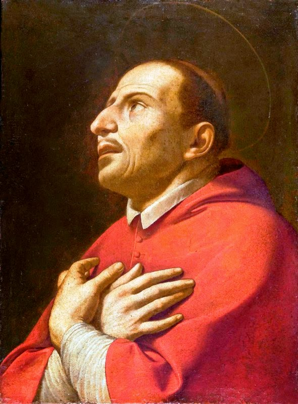

"SÃO CARLOS Borromeo"

"É a história de uma vida muito bonita e enternecedora, exemplo de persistência e de fé no ESPÍRITO DE DEUS. Alma humilde, pura e honesta que realizou uma gigantesca obra, construída em benefício da Igreja, da humanidade e conforme o Santíssimo Desejo Divino".
=ÍNDICE=
 -
FOTOS + ÚLTIMAS PALAVRAS + E-MAIL
-
FOTOS + ÚLTIMAS PALAVRAS + E-MAIL